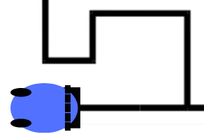
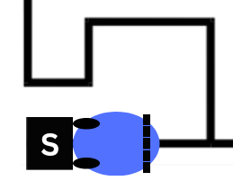
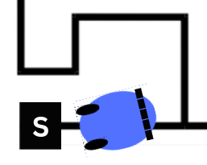
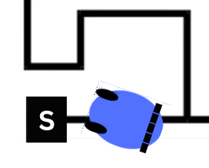
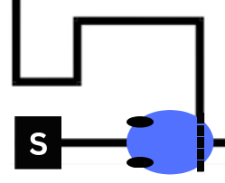

CS684: Embedded System Course
Lab 1: Draw FSM for Line Following
LEARNING RESOURCES
-
Tool to be used: Qfsm
-
Tutorial for Qfsm: Qfsm User Manual
-
Getting started for Lab-1: Finite state machine - Line tracker
AIM
- You have to build a FSM for Line Following. You are allowed to go for Moore or Mealy Machine.
- Objective is to move the robot from Start (S) to End (E) location. [Refer following diagram]
Note: The above image only gives an abstraction of some random path. It is just for reference. It will help you to build different states accurately.
Hint: According to given path, whenever robot encounters an intersection, it should take a respective turn which will lead the robot to End location. (This assumption helps to reduce the number of states in FSM)
- Inputs for the FSM: 5 White Line Sensors.
- Outputs for the FSM: 3 for controlling the motion of the Robot (1 for Direction and 2 for Motor's velocities).
- Both inputs and outputs should be taken as binary values while building the FSM in Qfsm.
- There can be N number of WLF Readings combinations that one can get.
- The following table shows few such cases:
| WLF Readings | Images |
|---|---|
| 11111 |  |
| 00100 |  |
| 00010 |  |
| 01000 |  |
| 11100 |  |
- Outputs are also binary,
- First output is used for Direction of robot viz 1 as forward and 0 as backward.
- Next two indicates velocity in specified direction viz 1 as full velocity and 0 as no velocity.
- Following table shows the combination of the ouputs:
| Output Combinations | Action |
|---|---|
| 1, 1, 1 | Forward |
| 1, 0, 1 | Left adjust by 10 deg with forward |
| 1, 1, 0 | Right adjust by 10 deg with forward |
| 1, 0, 0 | Stop |
| 0, 1, 1 | Backward |
| 0, 0, 1 | Right adjust by 10 deg with backward |
| 0, 1, 0 | Left adjust by 10 deg with backward |
| 0, 0, 0 | Stop |
- Consider the following scenario in which the robot is attempting to align itself by adjusting in the correct direction. This is how the robot will move for two consecutive 110 output combinations.
- Using the above information, draw FSM for Line following of the robot along with states added for describing the stratergy to move the robot from S to E locations.
You are free to make assumptions regarding readings of white line sensors at different instances, distance covered by robot for different motions in single step, distances regarding the paths given in the arena image.
Submission Instructions
- For Lab-1 submission you have to upload a
.tar.gzfile. - Folder should contain following:
.fsmfile: source file of QFSM.docfile:
- Containing information about the startergy used, assumptions made and description about the FSM, inputs used for simulation and outputs obtained in a tabular form.
- Also add youtube link of the video - shoot the screen recording of the simulation of FSM in QFSM for atleast 20 steps with different input combinations.
- Compress the folder and rename it as
<RollNo>_Lab_1.tar.gz - Upload the file on Moodle
Note: Make sure
- that
.fsmfile is simulatable on Qfsm - to add RollNo in your file name
- that